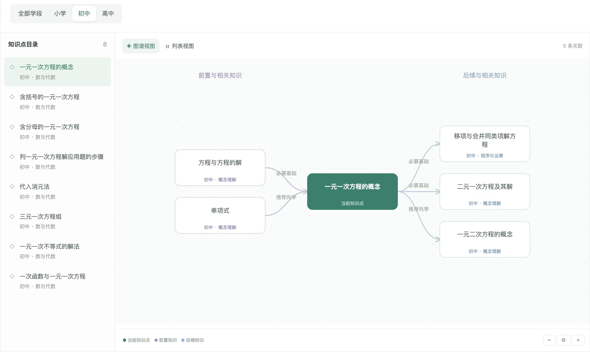
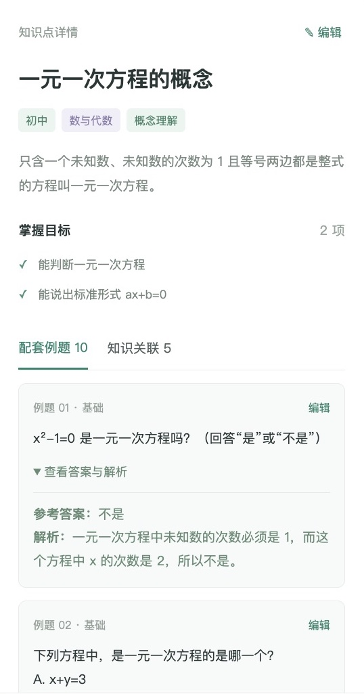

从“这一题不会”，到“哪一块基础还没懂”
学习时，我们经常遇到这样的情况：一个公式看起来很熟，换一道题却不知道怎么用；准备复习一章内容，又不清楚应该先补哪一块基础。
课本按章节展开，笔记按课堂记录。可在理解和解题时，我们需要在不同知识点之间来回连接。我想做一个工具，把这些联系摆在眼前，让人可以沿着知识的关系继续探索。
于是，有了知序 · 全学科知识图谱。目前它是一个可以直接在浏览器打开的知识浏览与编辑工作台，不需要注册账号。
六个学科，放进同一个工作台
知序面向小学到高中的知识探索。进入网站后，可以切换学科，按学段、知识领域筛选，也可以直接搜索知识点。不同学科的内容覆盖情况以实际数据为准。
选中知识点后，可以查看说明、掌握目标和配套题目，在局部关系图中探索前置与后续联系，也可以切换到列表查看。图谱适合从一个小问题出发，逐步展开，而不是一次把所有内容挤在屏幕上。

花三分钟，试着走一条知识脉络
第一次使用，不必从头浏览所有目录。选一个正在学习、或者曾经卡住过的知识点就可以。
- 打开网站，选择数学，再选择初中。
- 在搜索框输入一元一次方程，点击“一元一次方程的概念”。
- 阅读知识点说明与掌握目标，再看看详情中的题目，以及图谱展示的知识关联。
- 点击关联节点，继续探索；需要看到更完整的关联时，查看详情中的关联列表。
掌握目标：能判断一元一次方程；能说出标准形式 ax+b=0。
一个可以自问的小问题：x²−1=0 是一元一次方程吗？
它不是，因为未知数的次数是 2。先把概念边界弄清楚，再继续探索解方程的方法，会更容易发现自己卡在哪一步。

这次体验不需要做完一整章。能找到一个值得回头看的基础，或弄清楚一条知识联系，就是一个有用的开始。
除了看，还可以整理自己的版本
知序支持修改知识点说明与掌握目标、编辑题目、新增知识点和例题，也支持新增或调整知识关联。你可以把自己的理解补进去，再按学科导出 JSON 文件备份。
当前修改只保存在你正在使用的浏览器中。它们不会自动同步到其他设备，也不会直接改动公开网站的数据。清除浏览器数据可能丢失编辑内容，请及时使用“导出学科”保存备份。
谁可以试一试？
- 学生：复习时查看一个知识点的来龙去脉，给自己的理解补充说明。
- 家长：和孩子一起定位具体的知识问题，让“哪里不会”更容易说清楚。
- 老师与教育爱好者：参考知识结构，检查关联，整理适合自己教学或学习的版本。
- 开发者：从 GitHub 查看实现，交流知识组织与浏览工具的改进思路。
这个项目还在继续完善
目前的知序是一个浏览器中的单机工作台，还没有账号体系、云端同步或多人协作。知识点说明、题目和关联也需要持续检查，请结合教材和教学实际核对。它提供一种梳理知识的方式，不承诺学习或提分效果。
如果你发现一道题不准确、一条关系不合理，或者搜索不到想找的内容，欢迎告诉我。反馈时附上学科、知识点名称、问题描述，有截图会更方便定位。提交 GitHub Issue 需要登录 GitHub。
数据来源与致谢
六科知识图谱数据基于 xiaoyang111222 及项目贡献者的 cn-math-taxonomy 整理、修订与扩充；具体来源和改动记录见网站各学科数据清单。感谢原作者及贡献者的工作。
来源数据采用 CC BY-NC 4.0（署名—非商业性使用），使用、修改或再分发相关数据须保留署名、来源、许可及改动说明；商业使用需另行取得原权利人授权。本项目不代表原作者认可或背书。